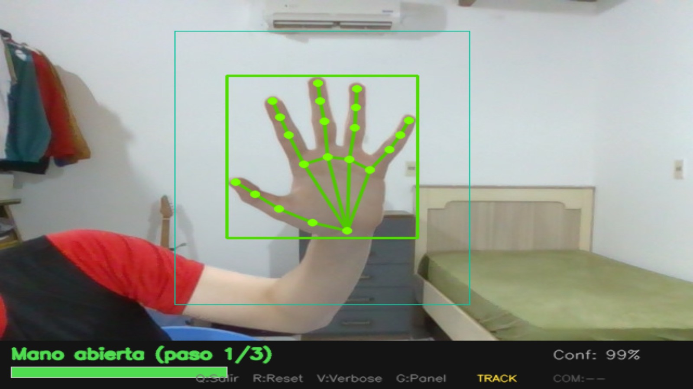
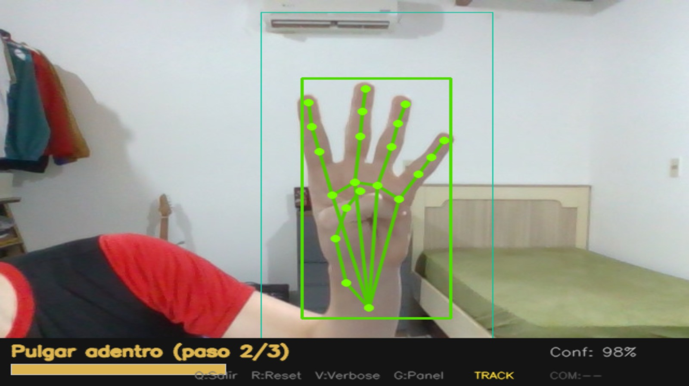
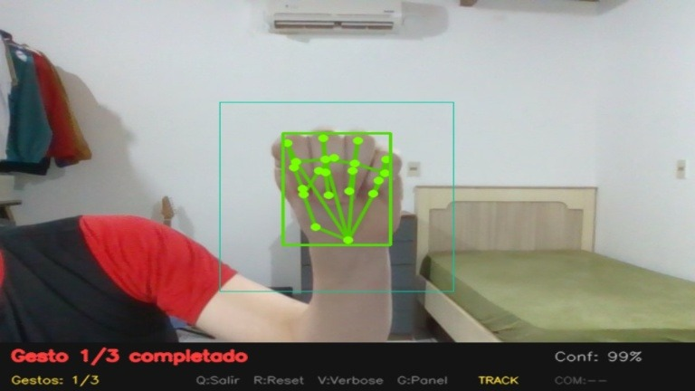
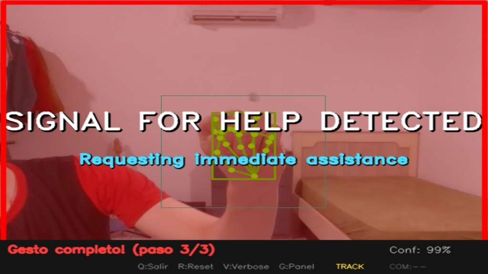

Un enfoque de ingeniería multiplataforma para el despliegue de sistemas inteligentes de alerta temprana ante situaciones de riesgo y violencia doméstica.
01 — Abordaje humanitario
La Signal for Help fue diseñada en 2020 por la Canadian Women's Foundation como una herramienta de comunicación no verbal y deliberadamente silenciosa: un gesto unimanual que una persona en situación de riesgo podía ejecutar durante una videollamada, en pleno confinamiento por la pandemia, para solicitar auxilio sin emitir sonido alguno y sin dejar rastro digital que pudiera ser interceptado por su agresor.
Su valor reside en su naturaleza secuencial: no es una postura estática, sino una transición biomecánica ordenada de la mano que difícilmente ocurre de forma accidental. Esa propiedad la convierte en un candidato ideal para la verificación algorítmica mediante visión por computadoras, donde la temporalidad y el orden de los estados pueden validarse con una máquina de estados finitos.
ESTADO 1 / 3
La mano se presenta con la palma extendida frente al sensor óptico, con los cinco dedos visibles y separados, estableciendo la línea base geométrica de los 21 puntos clave.
ESTADO 2 / 3
El pulgar se flexiona hacia el centro de la palma. El sistema detecta la reducción de la distancia euclidiana entre la falange distal del pulgar y el centroide palmar.
ESTADO 3 / 3
Los cuatro dedos restantes se cierran sobre el pulgar, atrapándolo. Solo si los tres estados ocurren en este orden y dentro de la ventana temporal, la seña se valida.
Propuesta innovadora de despliegue ciudadano
Este proyecto trasciende el contexto original de la seña. La propuesta técnica consiste en integrar el software directamente en las redes de cámaras de seguridad pública y monitoreo urbano de la ciudad. Cuando un ciudadano en situación de peligro ejecuta el gesto en la vía pública frente a una cámara de vigilancia, el sistema procesa el flujo de video localmente mediante visión artificial, detecta la secuencia en tiempo real y dispara una alerta silenciosa automatizada hacia el centro de monitoreo de las fuerzas del orden.
Este paradigma optimiza la prevención del delito y la protección de la integridad física sin escalar el riesgo frente al agresor: no exige que la víctima manipule un dispositivo, no emite sonido y no revela que la solicitud de auxilio fue realizada.
PASO 1
Gesto ejecutado en la vía pública
PASO 2
Captura por cámara de vigilancia urbana
PASO 3
Procesamiento local del flujo de video
PASO 4
Validación secuencial y temporal (FSM)
PASO 5
Alerta silenciosa al centro de monitoreo
02 — Ingeniería de software multiplataforma
El proyecto se materializa en dos repositorios de código independientes que comparten un núcleo algorítmico común: ambos sistemas implementan la captura del flujo de video mediante OpenCV y la extracción de 21 puntos clave (landmarks) tridimensionales de la estructura ósea de la mano mediante MediaPipe. Sobre esa base compartida, cada implementación responde a un perfil de despliegue radicalmente distinto.
Pipeline de visión por computadora común
03 — Marco científico e investigación
I
Pilar 1
Perspectiva histórica que recorre el camino desde el procesamiento de datos manual y mecanizado hasta la era contemporánea de la computación cuántica, el Cloud Computing, el Big Data y la Inteligencia Artificial. Este recorrido contextualiza la necesidad de la automatización visual: cuando el volumen de flujos de video supera toda capacidad de supervisión humana, la única respuesta de ingeniería viable es delegar la observación primaria en sistemas de visión artificial.
II
Pilar 2
Fundamentos lógicos de la programación y optimización de estructuras de control aplicados al diseño matemático de la máquina de estados finitos que valida el orden secuencial y temporal de la seña. Cada transición de estado exige el cumplimiento estricto de condiciones geométricas sobre los 21 landmarks dentro de ventanas temporales acotadas, lo que minimiza falsos positivos y garantiza complejidad computacional constante por cuadro procesado.
III
Pilar 3
Infraestructura necesaria para el almacenamiento a gran escala, el preprocesamiento digital de imágenes y la extracción de características, junto con los protocolos criptográficos que aseguran la transmisión cifrada del flujo de video en tiempo real. El diseño privilegia el procesamiento local: la información que abandona el nodo de cámara es la alerta mínima necesaria, nunca el flujo biométrico crudo.
IV
Pilar 4
Viabilidad sobre el ecosistema Arduino (incluyendo la Nicla Vision), mitigación algorítmica del sesgo y la discriminación para evitar derivas hacia la vigilancia masiva invasiva, y alineamiento estricto con los marcos legales internacionales más exigentes: el Reglamento General de Protección de Datos (GDPR) y la Ley de Inteligencia Artificial de la Unión Europea (EU AI Act), tratando las imágenes capturadas como datos biométricos de categoría especial.
04 — Galería de implementación
Demostración animada del funcionamiento del sistema —sin reconocimiento en tiempo real desde esta página—: la simulación reproduce el esqueleto de 21 landmarks de MediaPipe atravesando los tres estados de la seña, la validación de la máquina de estados finitos y el disparo de la alerta silenciosa.
Máquina de estados finitos · validación
Palma extendida
Línea base de los 21 landmarks
Oclusión del pulgar
Distancia pulgar–centroide reducida
Cierre perimetral
Cuatro dedos sobre el pulgar
Alerta silenciosa
En espera de secuencia válida
[12:04:31] CAM-09 :: estado_1 validado · palma extendida (conf. 0.97)
[12:04:32] CAM-09 :: estado_2 validado · oclusión del pulgar (Δt 0.84 s)
[12:04:33] CAM-09 :: SECUENCIA COMPLETA → alerta silenciosa despachada al centro de monitoreo
Capturas reales del programa · Python y C++

CAM-04 · FASE 1 ESTADO 1/3 · PALMA · Conf 99%
CAM-04 · FASE 2 ESTADO 2/3 · PULGAR · Conf 98%
CAM-09 · FASE 3 ESTADO 3/3 · CIERRE · Conf 99%
CAM-09 · SIGNAL FOR HELP05 — Sección insignia
Esta carrera, de naturaleza disruptiva y pionera en la región, fusiona la rigurosidad de la ingeniería de software clásica —arquitectura, eficiencia algorítmica, gestión nativa de recursos— con la potencia analítica de la Inteligencia Artificial y la Ciencia de Datos. No se trata de dos disciplinas yuxtapuestas, sino de un perfil profesional integrado, capaz de concebir un sistema desde la formulación matemática hasta su despliegue en hardware de producción.
Este proyecto es la demostración tangible de esa visión: estudiantes de primer año ya están capacitados para proponer e implementar soluciones tecnológicas de alta complejidad —visión por computadoras, sistemas multiplataforma, cumplimiento normativo internacional— con impacto directo en la seguridad ciudadana y el bienestar social de Encarnación.